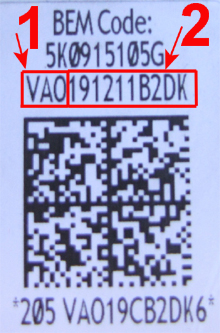
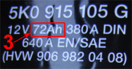

For vehicles with battery monitoring, several parameters are calculated and controlled. For example, battery charging, resting voltage, and energy saving functions. To control this correctly, a battery designated by the manufacturer has to be installed and adapted to the control unit. The following parameters shall be entered when replacing the battery:
Manufacturer (number 1 in figure).
Serial number (number 2 in figure), corresponds to the last 10 characters in the number-letter sequence.
Battery capacity in Ah (number 3 in figure)
Example of feed from battery in figure below:
Manufacturer: VAO (Varta)
Serial number: 191211B2DK
Battery capacity: 72


The adaptation shall only be done when replacing the battery since all historic data regarding battery status is erased.
Test conditions:
Ignition on.
New genuine battery installed.
Procedure:
Start the function.
Existing adaptation values for the battery are shown. Press "YES" to enter new values.
A dialogue box with entry field for battery capacity is shown. Enter the current value (number 3 in figure), press "OK".
A scroll list with manufacturers is shown, select manufacturer (number 1 in figure), press "OK".
A dialogue box with field for serial number is shown. Enter the serial number (10 characters), press "OK".
(If no serial number can be read on the battery, then enter 10 ones instead.)
The adaptation is performed.
The new saved adaptation values are shown.
Press "OK" to exit the function.
If the function fails, check the test conditions and repair any faults.